CODES Toolbox: Getting Started
Through a very simple example, this page showcases some of the key elements of the CODES toolbox.
Contents
A beam example
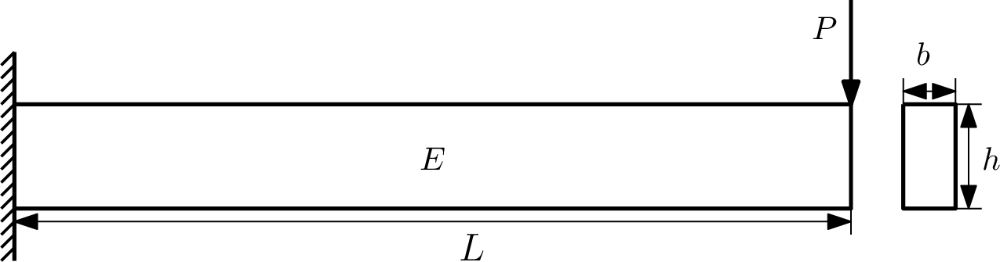
Consider a simple cantilever beam with a rectangular cross section. The goal of this example is to explicitly identify the region of the design space where the tip deflection of the beam is above 1 mm. This "explicit design space decomposition" is performed in a three dimensional space:
- b: cross sectional width
- h: cross sectional height
- P: vertical tip loading
The tip deflection (in mm) is given by:
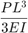
where the second moment of the area is:
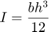
Although an analytical function is used, this problem is also representative of cases of expensive black-box functions (e.g., finite element code).
tip_def=@(x)(x(:,3)*200^3)./(3*210e3*(x(:,1).*x(:,2).^3)/12);
Explicit Design Space Decomposition
g=@(x)1-tip_def(x);
The design variable ranges are:
- b: 4 to 15 mm
- h: 12 to 24 mm
- P: 59 to 118 N
For reference, plot the actual boundary g=0 which will be approximated in the subsequent steps:
lb_x=[4 12 59]; ub_x=[15 24 118]; [x,y,z]=meshgrid(linspace(lb_x(1),ub_x(1),100),... linspace(lb_x(2),ub_x(2),100),... linspace(lb_x(3),ub_x(3),100)); vals=reshape(g([x(:) y(:) z(:)]),size(x)); figure('Position',[200 200 500 500]) p=patch(isosurface(x,y,z,vals,0)); p.FaceColor='red'; p.EdgeColor='none'; grid on view(34,30) axis square axis(reshape([lb_x;ub_x],1,6)) camlight lighting gouraud xlabel('$b$','interpreter','latex','fontsize',20) ylabel('$h$','interpreter','latex','fontsize',20) zlabel('$P$','interpreter','latex','fontsize',20)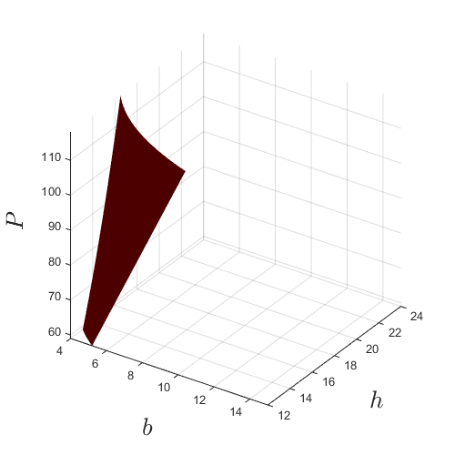
Explicit Design Space Decomposition (EDSD) is performed using a Support Vector Machine (SVM) classifier. The first step is to obtain a design of experiments and build an initial SVM. The class of each sample needed for the training of SVM is obtained through the sign of the g function. If it is negative then it is considered "failure" or "infeasible". By default, the SVM kernel is Gaussian with parameter selected using the Jaakkola's technique.
X=CODES.sampling.cvt(30,3,... 'lb',[4 12 59],... 'ub',[15 24 118]); % 30 CVT samples in dimension 3 Y=g(X); % Evaluate DOE svm=CODES.fit.svm(X,Y,'UseParallel',true); % Build an SVM and enable % parallel calculation svm.isoplot('lb',[4 12 59],... 'ub',[15 24 118],... 'bcol','b',... 'new_fig',true); % Plot initial SVM grid on view(34,30) axis square axis(reshape([lb_x;ub_x],1,6)) xlabel('$b$','interpreter','latex','fontsize',20) ylabel('$h$','interpreter','latex','fontsize',20) zlabel('$P$','interpreter','latex','fontsize',20)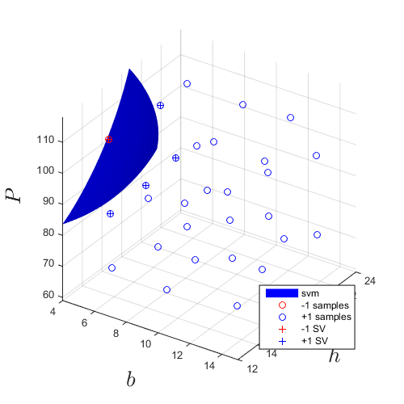
The initial boundary is iteratively refined through adaptive sampling. The EDSD procedure relies on the successive addition of max-min and anti-locking samples. Click on the previous links for details on the functions and their options. The following refinement uses 20 samples:
svm_col=CODES.sampling.edsd(g,svm,lb_x,ub_x,'iter_max',20,... 'conv',false,'display_EDSD',false);
Plot the final SVM after 20 adaptive samples in addition to the 30 from initial design of experiments:
svm_col{end}.isoplot('lb',[4 12 59],...
'ub',[15 24 118],...
'bcol','b',...
'new_fig',true); % Plot initial SVM
grid on
view(34,30)
axis square
axis(reshape([lb_x;ub_x],1,6))
xlabel('$b$','interpreter','latex','fontsize',20)
ylabel('$h$','interpreter','latex','fontsize',20)
zlabel('$P$','interpreter','latex','fontsize',20)
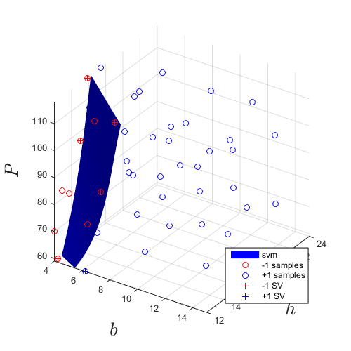 Sensitivity analysis
In many cases, it can be beneficial to perform a sensitivity analysis of the input variables of a model. The results of such analysis can typically be used to select features of a meta-model. The CODES toolbox offers three approaches: correlation coefficients, derivative-based global sensitivity measures and Sobol' indices.
X=unifrnd(repmat(lb_x,1e4,1),repmat(ub_x,1e4,1));
Y=tip_def(X);
dY=CODES.common.grad_fd(tip_def,X,'vectorial',true);
Pearson correlation coefficient:
corr_coeff=CODES.sensitivity.corr(X,Y,'pie_plot',true);
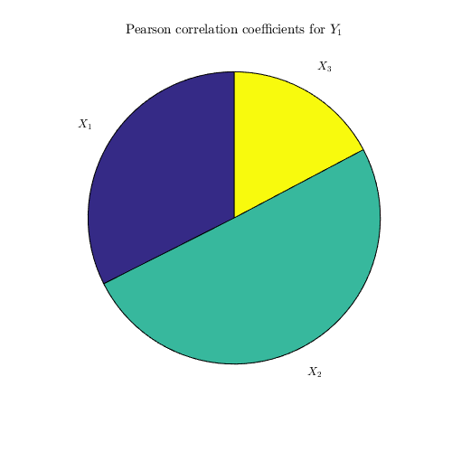 Derivative-based sensitivity measures:
dgsm_values=CODES.sensitivity.dgsm(dY,'pie_plot',true);
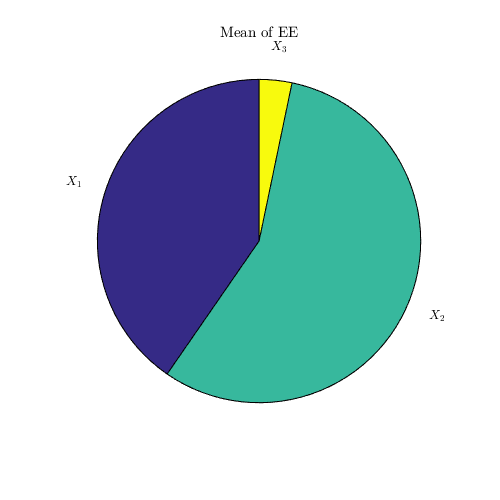 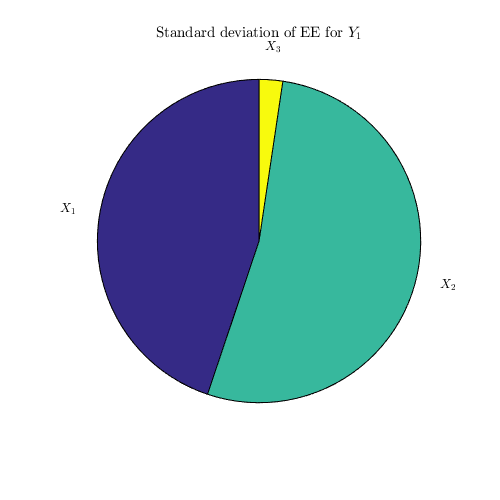 Sobol' indices:
sobol_ind=CODES.sensitivity.sobol(tip_def,3,1e5,'lb',lb_x,'ub',ub_x,'vectorized',true,'bar_plot',true);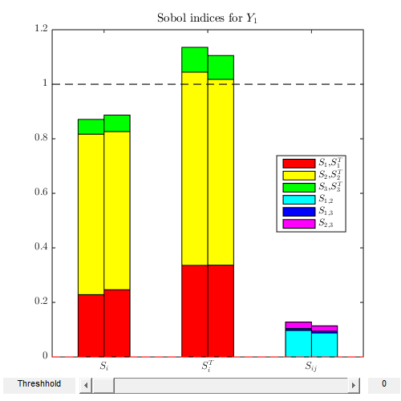
Reliability assessment
The reliability assessment for structures and other mechanical design is an important aspect of computational design. The CODES toolbox includes four approaches: crude Monte Carlo, FORM, SORM and subset simulations.
Let's assume for the purpose of this example, and to be consitent with the previous examples, that the three random variables are independent with the following marginal distributions: 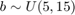$ 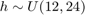$ 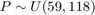$ An appropriate inverse transform (required for FORM/SORM) is:
Tinv=@(u)unifinv(normcdf(u),repmat(lb_x,size(u,1),1),repmat(ub_x,size(u,1),1));
An appropriate sampling function, required for CMC/SubSim is:
sampler=@(N)unifrnd(repmat(lb_x,N,1),repmat(ub_x,N,1));
Appropriates marginals, required for SubSim, are:
PDFs=@(x)unifpdf(x,repmat(lb_x,size(x,1),1),repmat(ub_x,size(x,1),1));
The approximated/estimated probabilities of failure are:
res_form=CODES.reliability.form(g,3,'Tinv',Tinv); disp(res_form) res_sorm=CODES.reliability.sorm(g,3,'Tinv',Tinv); disp(res_sorm) res_mc=CODES.reliability.mc(g,3,'sampler',sampler,'vectorial',true); disp(res_mc) res_subsim=CODES.reliability.subset(g,3,'PDFs',PDFs,'sampler',sampler,'vectorial',true); disp(res_subsim)
Pf: 0.0659
beta: 1.5073
alpha: [-0.6169 -0.7349 0.2817]
LS_count: 29
MPP: [5.9387 13.6078 98.2018]
uMPP: [-0.9298 -1.1078 0.4246]
Pf: 0.0639
beta: 1.5229
LS_count: 48
MPP: [5.9387 13.6078 98.2018]
H: [3x3 double]
G: [0.4796 0.5714 -0.2190]
Pf: 0.0400
beta: 1.7505
LS_count: 1000000
CoV: 0.4898
CI_Pf: [0.0396 0.0404]
CI_beta: [1.7461 1.7550]
Pf: 0.0390
beta: 1.7627
steps: 2
LS_count: 188987
Let us use this example to stress out the advantage of vectorizing limit state function, when possible, and setting 'vectorized' to true when using reliability assessment techniques:
tic; CODES.reliability.mc(g,3,'sampler',sampler); disp(['Not vectorized: ' CODES.common.time(toc)]) tic; CODES.reliability.mc(g,3,'sampler',sampler,'vectorial',true); disp(['Vectorized: ' CODES.common.time(toc)])
Not vectorized: 18s Vectorized: 1.8021e-01 s
Copyright © 2015 Computational Optimal Design of Engineering Systems (CODES) Laboratory. University of Arizona.
|
|
Computational Optimal Design of Engineering Systems |

|